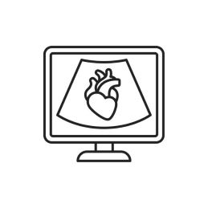
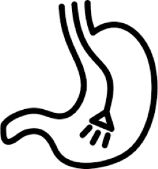

-
Radiografia
Descrição
Modalidade diagnóstica que utiliza radiação para a obtenção de imagens radiográficas, onde é possível realizar a avaliação das estruturas ósseas, campos pulmonares e a avaliação parcial das estruturas de tecidos moles.
-
Ultrassonografia
Descrição
Modalidade diagnóstica que utiliza ondas sonoras para a obtençao de imagens ultrassonográficas que permitem a avaliação dos órgão abdominais, estruturas vasculares, superfícies articulares, estruturas cervicais, estruturas intra-oculares e estruturas intra-cranianas.
-
Ecocardiografia
Descrição
Modalidade que utiliza ondas sonoras (assim como a ultrassonografia) para avaliar as estruturas cardíacas e o seu funcionamento.
-
Endoscopia
Descrição
Modalidade que obtém imagens diagnósticas e/ou realiza intervenções como biópsias e retiradas de corpos estranhos no trato gastrointestinal (esôfago e estômago, principalmente) com a utilização de um endoscópio.